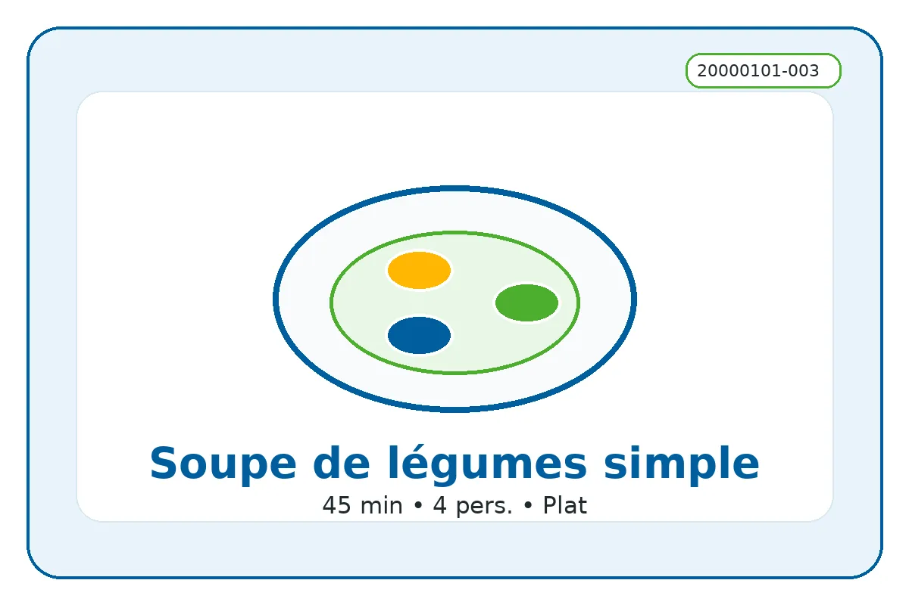

ID recette : 20000101-003
Soupe de légumes simple
Une recette simple et accessible : soupe de légumes simple.
Cette soupe accepte presque tous les légumes : carottes, poireaux, courgettes, pommes de terre, chou-fleur, tomates. Elle est utile pour éviter de jeter des légumes encore consommables.

⚖️ Adapter les quantités
Le calcul adapte les quantités proportionnellement.
🧺 Ingrédients avec quantités
Principaux
- 800 g — légumes variés
- 300 g — pommes de terre
Secondaires
- 1 pièce — oignon
- 1000 ml — eau
Optionnels
- 80 ml — crème
- 40 g — fromage râpé
👩🍳 Préparation détaillée
- Laver, éplucher si nécessaire, puis couper les légumes en morceaux moyens.
- Mettre les légumes et les pommes de terre dans une grande casserole.
- Ajouter l’eau jusqu’à couvrir les légumes.
- Faire cuire environ 30 minutes, jusqu’à ce que les légumes soient tendres.
- Mixer pour obtenir une soupe lisse, ou écraser grossièrement pour garder des morceaux.
- Ajouter un peu de crème ou de fromage si disponible, puis rectifier l’assaisonnement.
💡 Astuce anti-gaspi
Utiliser les restes compatibles pour éviter le gaspillage.
🔁 Variantes possibles
Adapter avec les produits disponibles : légumes, conserves, fromage ou féculents.
⚠️ Allergènes et conservation
Allergènes : À vérifier selon les produits utilisés
Conservation : À conserver 24 h au réfrigérateur dans une boîte fermée.
Réchauffage : À réchauffer doucement si nécessaire.
Vérifiez toujours les étiquettes des produits utilisés.
🔎 Filtres associés
Cliquez sur un bouton pour trouver les recettes associées au même champ.
Sous-catégorie : Soupe
Moment du repas : Dejeuner Diner
Équipement : Casserole
📱 QR code
QR code vers la fiche en ligne.
https://recettesducoeur.github.io/recettes/20000101-003.html
Sur mobile/tablette, seul le téléchargement PDF est proposé. Sur PC, l’impression conserve les quantités sélectionnées.